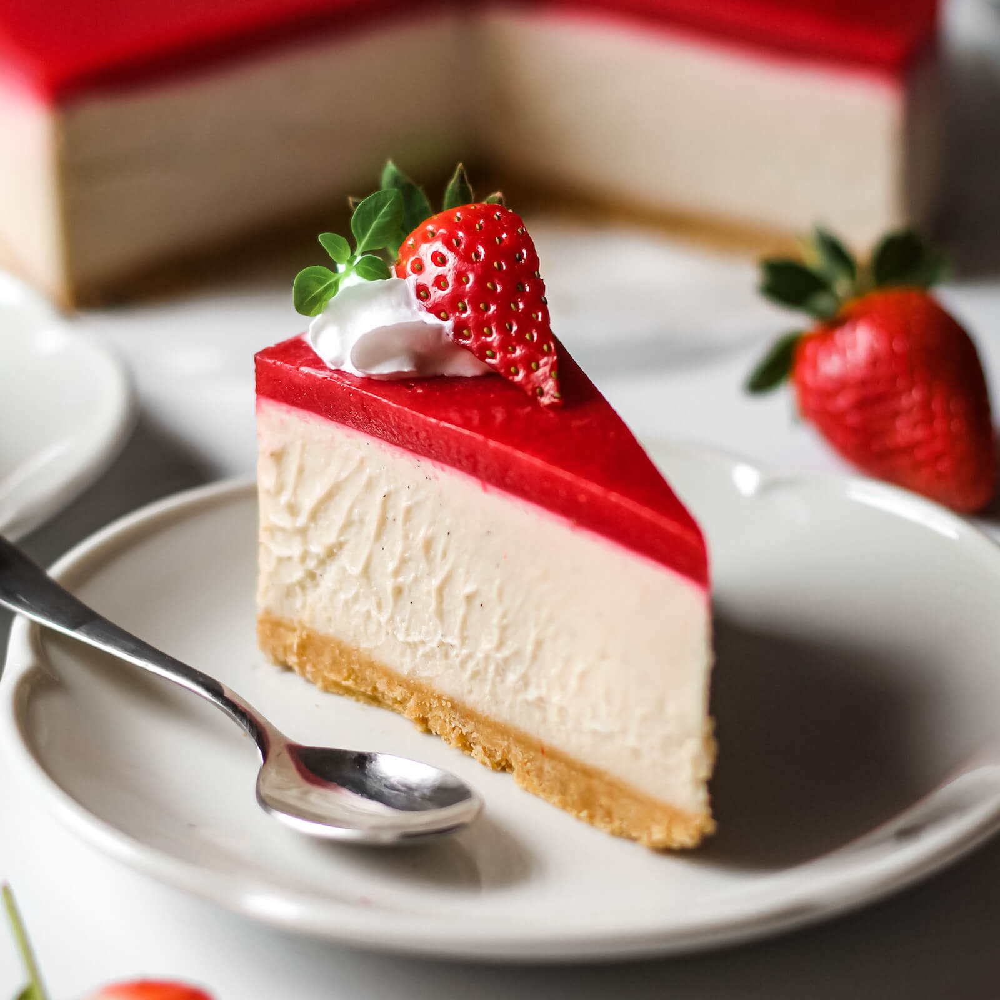

Enjoy a creamy and fruity strawberry cheesecake, a classic dessert with a refreshing twist. Perfect for any celebration or casual treat.

This strawberry cheesecake combines a smooth cream cheese filling with a crunchy crust and fresh strawberries on top. The balance of creamy, tangy, and fruity flavors creates a dessert that's both light and satisfying, making it ideal for gatherings or special occasions.
This easy-to-make cheesecake is a delightful treat with minimal preparation. With a short refrigeration time, it's a perfect make-ahead dessert that everyone will love. The strawberry topping adds a refreshing touch that complements the creamy filling perfectly.